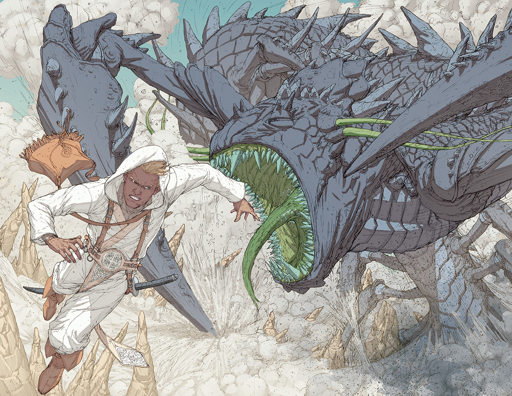

TALDAIN
A unique planet split in two halves by a tidally locked orbit. One side, known as Dayside, is bathed in permanent sunlight and is mostly made up by desert landscapes, while the other side, known as the Darkside, remains in permanent night, With the only source of light its own natural bioluminescence and planetary glow.
The Dayside is hot, habited by people who have adapted to the harsh environment and rely heavily on sand manipulation and using solar energy. Meanwhile, the Darkside has a more temperate climate and supports societies with more unique customs and a different relationship to sand manipulation.

TALDAIN SYSTEM
The Taldain system is the planetary system that contains Taldain. It is a binary system consisting of one large star and a secondary smaller star. The smaller, a relatively dim white dwarf, is surrounded by a dense cloud of particles known as the Particulate Ring. The larger, a blue-white supergiant, plays an important role in the means by which Taldain is powered by its magic.


INHABITANTS
The people of Taldain can be divided depending on Dayside and Darkside. On Dayside, the people have developed a desert-based culture centered around survival, trade, and utilizing sand manipulation. In the society of Dayside, the ruling class, known as the Dynasts, hold power through politics and control.
On Darkside, the inhabitants live in more temperate conditions and have developed different customs, technologies, and uses of magic. While less is known about Darkside’s cultures, they are seen as more technologically advanced in some areas.
SAND MASTERY
Sand mastery is a unique form of magic only usable in Dayside. Sand mastery, as its name suggests, deals with manipulating white sand, which only appears in Dayside. White sand appears dull and black until it is exposed to the sun, which then transforms it into literal white sand.
To become a sand master, you need innate talent and a body to handle it. Not everyone can become a sand master, some people are born with the ability to use it, and most do not. It is also risky, as sand mastery can be lost over time.
